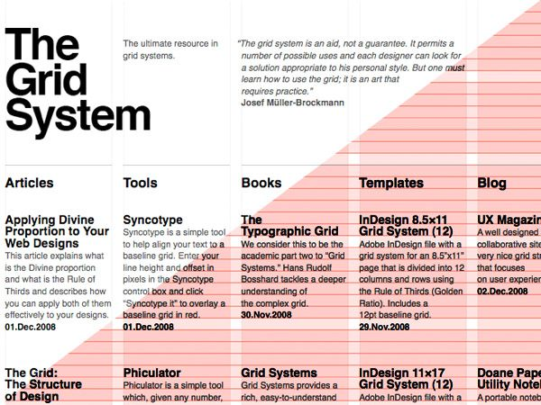

HTML 그리드 시스템
그리드 시스템이란?
그리드 시스템(Grid System)이란, 페이지 콘텐츠를 논리적이고 일관성 있는 질서와 구조로 디자인할 수 있도록 돕는 그래픽 시스템을 말합니다. 웹 디자인에서 그리드 시스템은 페이지의 디자인 영역을 나누고, 각 영역에 디자인 요소를 배치하는 데 사용됩니다.
다음은 그리드 시스템의 예시입니다.
그리드 시스템은 웹 디자인에 있어 아래와 같은 긍정적인 역할을 합니다.
- 컬럼 단위로 요소를 구성하므로 많은 양의 콘텐츠도 정돈된 느낌을 준다.
- 격자 형식에 따르므로 블록을 쌓듯 디자인이 편리하다.
- 일관되고 통일성 있는 아름다운 웹 디자인이 가능하다.
그리드 시스템은 방문자에게 페이지가 포함하는 정보를 최적의 형태로 보여주고, 전달하기 위한 도구입니다. 그리드 시스템에 따라 페이지를 디자인하면 많은 양의 정보도 정돈되고 안정된 구조로 만들어주며, 가독성 및 심미성도 더해집니다.